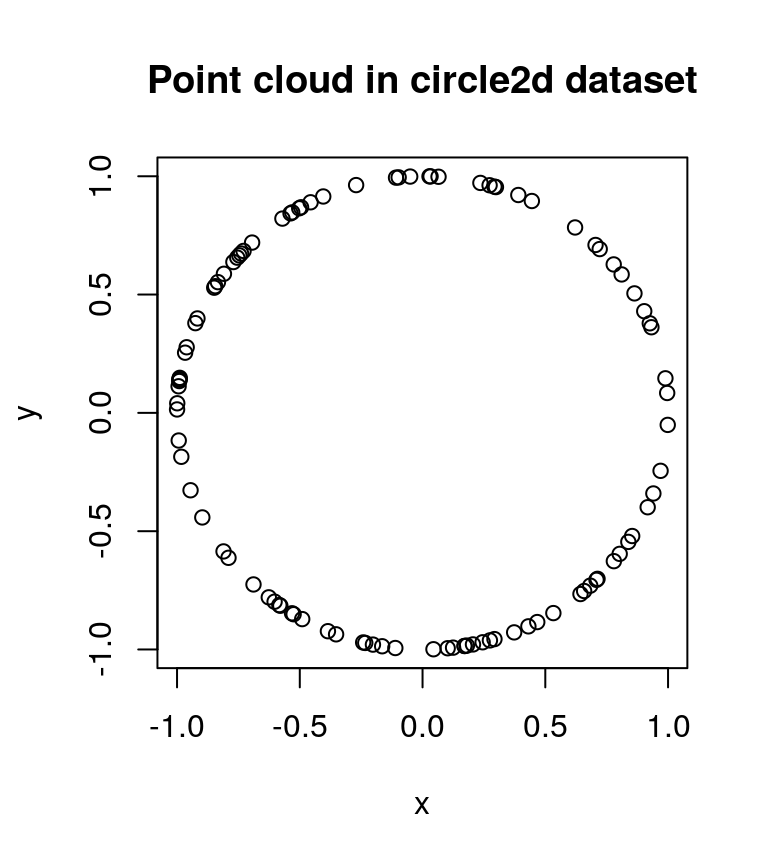
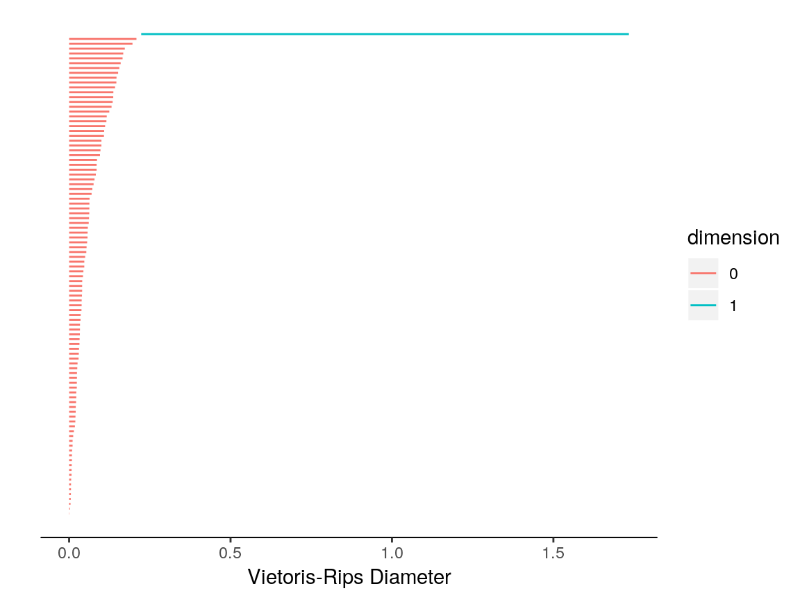
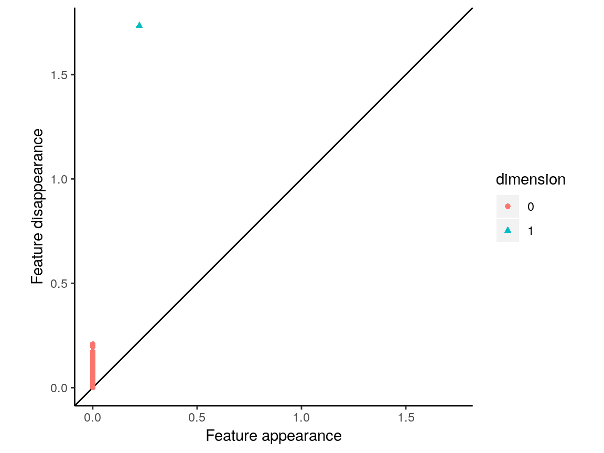

vignettes/intro.Rmd
intro.RmdTDAstats is intended to be a comprehensive R pipeline to conduct topological data analysis, specifically, using persistent homology of a Vietoris-Rips complex to identify significant features within high-dimensional datasets. The three primary functions of TDAstats mirror the functionality of tools used to conduct traditional statistical analysis (e.g. simple linear regression). Listed below are the three functions and their analogs in simple linear regression.
To learn more about the computation of persistent homology, see Otter et al. (2017).
TDAstats is available on CRAN. The development version can also be installed from its GitHub repo. Use the appropriate selections of the R code below to install your preferred version.
N.B.: if you are new to R, installing TDAstats from CRAN is recommended. The development version on GitHub may be unstable.
# install development version of TDAstats - advanced users
devtools::install_github("rrrlw/TDAstats")
# install TDAstats from CRAN
install.packages("TDAstats")
# load TDAstats for use
library("TDAstats")In this vignette, we will use the circle2d dataset included in TDAstats. The circle2d dataset is a numeric matrix containing the 2-dimensional Cartesian coordinates of 100 points on the circumference of a unit circle centered at the origin. To load circle2d and take a quick peek, run the following R code:
# load dataset
data(circle2d)
# look at the dimensions and class of circle2d
class(circle2d)
> [1] "matrix"
nrow(circle2d)
> [1] 100
ncol(circle2d)
> [1] 2
# take a peek at first 6 rows
head(circle2d)
> [,1] [,2]
> [1,] -0.09728967 0.9952561
> [2,] -0.69421384 0.7197688
> [3,] -0.89704859 -0.4419319
> [4,] 0.83824069 -0.5453004
> [5,] 0.29894927 0.9542690
> [6,] 0.80302853 -0.5959406Above, each of the 100 rows represents a single point, with each of the 2 columns representing a Cartesian coordinate for a single dimension. Column 1 (accessed by circle2d[, 1]) contains the x-coordinates of the 100 points and column 2 (accessed by circle2d[, 2]) contains the respective y-coordinates. To confirm that the points in circle2d do lie on the circumference of a circle, we can quickly create a scatterplot.
# scatterplot of circle2d
plot(circle2d, xlab = "x", ylab = "y", main = "Point cloud in circle2d dataset")
Given that the points in circle2d are uniformly distributed across the circumference of a circle without any error or noise, we expect a single prominent 1-cycle to be present in its persistent homology. The Ripser C++ library is wrapped by R using Rcpp, and performs calculations on a Vietoris-Rips complex created using the circle2d point cloud (Eddelbuettel and Francois 2011). These calculations result in a numeric matrix that contains all the necessary information to characterize the persistence of features within circle2d, and can be performed with a single line of R code using TDAstats.
# calculate persistent homology
circle.phom <- calculate_homology(circle2d)
# print first 6 features (ordered by dimension and birth)
head(circle.phom)
> dimension birth death
> [1,] 0 0 0.0007823978
> [2,] 0 0 0.0024476588
> [3,] 0 0 0.0043431663
> [4,] 0 0 0.0050472712
> [5,] 0 0 0.0055217817
> [6,] 0 0 0.0058158724
# print last 6 features (ordered by dimension and birth)
tail(circle.phom)
> dimension birth death
> [95,] 0 0.0000000 0.1655777
> [96,] 0 0.0000000 0.1676424
> [97,] 0 0.0000000 0.1724907
> [98,] 0 0.0000000 0.1962725
> [99,] 0 0.0000000 0.2085510
> [100,] 1 0.2232352 1.7339087Each row in the homology matrix returned by the calculate_homology function (variable named circle.phom) represents a single feature (cycle). The homology matrix has 3 columns in the following order:
Persistence of a feature is generally defined as the length of the interval of the radius within which the feature exists. This can be calculated as the numerical difference between the second (birth) and third (death) columns of the homology matrix. Confirmed in the output of the head and tail functions above, the homology matrix is ordered by dimension, with the birth column used to compare features of the same dimension. As expected for circle2d, the homology matrix contains a single prominent 1-cycle (last line of the output of tail). Although we suspect the feature to be a persistent 1-cycle, comparison with the other features in the homology matrix is required to confirm that it is sufficiently persistent. This task is done far more easily with an appropriate visualization than by eyeballing the contents of circle.phom.
TDAstats uses the ggplot2 R package to create visualizations for persistent homology (Wickham 2009). One method of visualizing persistent homology is the topological barcode. Each feature is depicted by a single bar (ergo, a topological barcode) with its left edge at feature birth and its right edge at feature death. Thus, the persistence of a feature is depicted as the length of the bar. The horizontal axis of the barcode represents the Vietoris-Rips complex radius; the vertical axis is not inherently meaningful and is not strictly ordered. By convention, the order of features is in reverse of the order in the homology matrix. Hence, the dimension of features increases as you go higher up the vertical axis, as does the value of feature birth. For ease of interpretation, feature dimension is coded as the bar’s color, with an accompanying legend.
# plot topological barcode
plot_barcode(circle.phom)
In the topological barcode plotted above, we see a number of 0-cycles (red bars). However, of interest to us is the single 1-cycle at the top of the barcode (blue bar). A quick visual evaluation of the barcode confirms that the 1-cycle is clearly a significant feature (the blue bar is relatively long), as expected for circle2d. Congratulations, you have successfully used TDAstats to conduct topological data analysis on a point cloud!
Another method of visualizing persistent homology is the persistence diagram. Each feature is depicted by a single point with the horizontal axis representing feature birth and the vertical axis representing feature death. The line \(y = x\) is included as a reference. Since feature birth always precedes feature death (\(x < y\)), all points in a persistence diagram lie above the reference line. In persistence diagrams, the persistence of a feature is depicted as the vertical distance between the point representing the feature and the reference line. Just like topological barcodes, feature dimension is coded as the point’s color, with an accompanying legend; however, feature dimension is redundantly coded as point shape in case of issues with color differentiation.
# plot persistence diagram
plot_persist(circle.phom)
In the persistence diagram plotted above, we see a number of 0-cycles (red circles); it is difficult to differentiate individual 0-cycles due to the overlap between points. However, the single 1-cycle is distinct (blue triangle), again confirming our initial proposition that the persistent homology of circle2d would be significant for a single prominent 1-cycle. When evaluating persistence diagrams, it must be kept in mind that a point’s y-coordinate by itself is not an accurate measure of feature persistence; rather, it is the vertical distance between the point and the reference line that represents persistence.
Eddelbuettel, Dirk, and Romain Francois. 2011. “Rcpp: Seamless R and C++ Integration.” Journal of Statistical Software 40: 1–18. doi:10.18637/jss.v040.i08.
Otter, Nina, Mason Porter, Ulrike Tillmann, Peter Grindrod, and Heather Harrington. 2017. “A Roadmap for the Computation of Persistent Homology.” EPJ Data Science 6: 17. doi:10.1140/epjds/s13688-017-0109-5.
Wickham, Hadley. 2009. Ggplot2: Elegant Graphics for Data Analysis. Springer-Verlag New York. http://ggplot2.org.